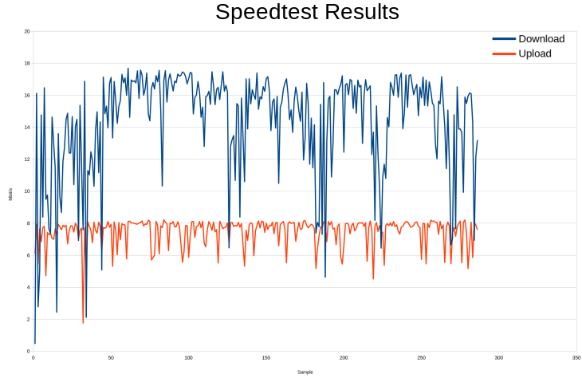

Seit .Net Core offiziell auf der Rapsberry Pi 2+ Plattform unterstützt wird, kann man PowerShell Scripte, über PowerShell Core (Version 6+) in Raspbian ausführen. Wir erklären die Installation und ein Anwendungsbeispiel, in dem es darum geht, die Internet-Verbindungsgeschwindigkeit über einen längeren Zeitraum zu überwachen und protokollieren.
Setup
Die Installation auf Windows wird ausführlich auf docs.microsoft.com erklärt.
Um PowerShell Core auf Linux bzw. Raspbian zu installieren, kann man folgenden Schritte befolgen.
git Client und Voraussetzungen installieren/updaten
sudo apt-get upgrade git sudo apt-get install libunwind8PowerShell git repository auschecken
git clone https://github.com/PowerShell/PowerShell.gitPowerShell über “install-powershell.sh” bauen und starten
cd PowerShell ./tools/install-powershell.sh pwsh
Speedtest
Um einen Speedtest über die Kommandozeile durchzuführen gibt es mehrere Möglichkeiten.
Eine einfache Variante ist das Python-Programm “speedtest-cli” von Matt Martz. Man kann das Tool direkt herunterladen und ausführbar machen, siehe Anleitung.
wget -O speedtest-cli https://raw.githubusercontent.com/sivel/speedtest-cli/master/speedtest.py speedtest
chmod +x speedtest
PowerShell Script Executable
Damit PowerShell-Scripts in Linux korrekt ausgeführt werden können muss man einen “shebang” am Anfang des Scripts einfügen:
#!/usr/local/bin/pwsh
Folgendes Script kann verwendet werden um einen “dauer-Speedtest” durchzuführen. (Inhalt z.B. in Invoke-Speedtest.ps1 kopieren)
#!/usr/local/bin/pwsh
$outfile = "speedtest.csv"
[regex]$regexDl="Download\:\s(?'speed'\d+\.\d+)\s"
[regex]$regexUl="Upload\:\s(?'speed'\d+\.\d+)\s"
"Date;Time;Download;Upload;" | Out-File $outfile -Encoding utf8
while (1 -eq 1) {
Write-Host -ForegroundColor Green "doing speedtest..."
$meas = $(speedtest)
$meas
$download = $regexDl.Match($meas).Groups[1].Value.Replace(".",",")
$upload = $regexUl.Match($meas).Groups[1].Value.Replace(".",",")
"$(Get-Date -Format "yyyy-mm-dd;HH:mm:ss");$download;$upload;" | Out-File $outfile -Encoding utf8 -Append
Start-Sleep -Seconds 300
}
Wenn man das Script direkt ausführen möchte, muss es noch ausführbar gemacht werden:
chmod +x Invoke-Speedtest.ps1
./Invoke-Speedtest.ps1
Die so erzeugte Datei “speedtest.csv” kann mit einem beliebigen Charting/Tabellenkalkulationsprogramm visualisiert werden:
